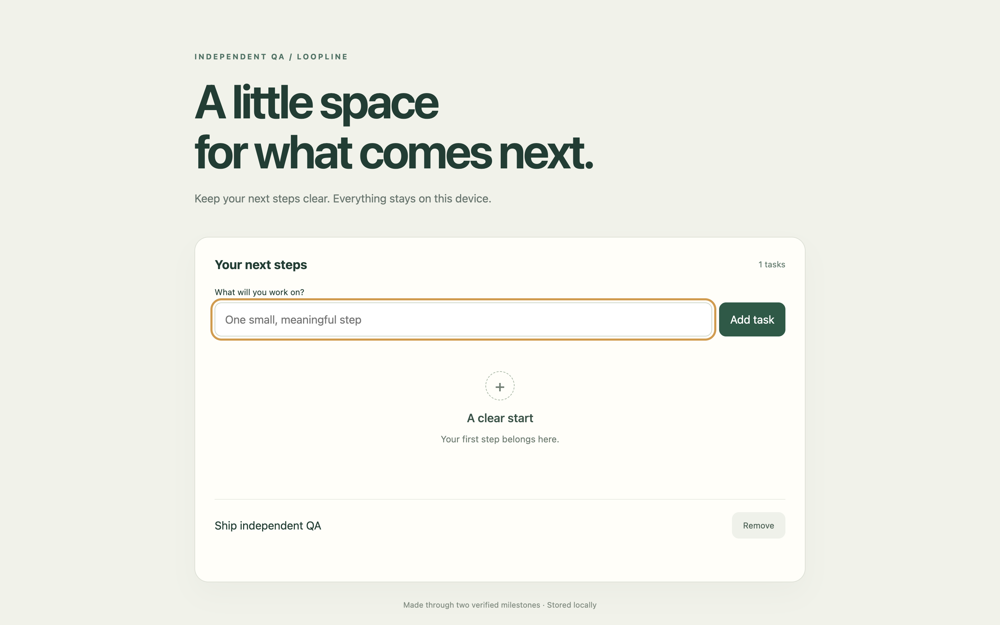
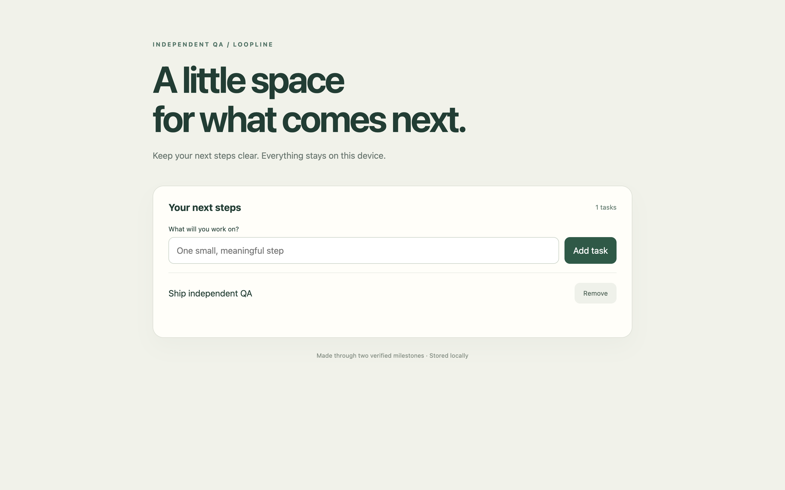

Paper 읽기 · 두 부분으로 분리
계획 단계에서 get_guide를 호출했습니다. 저장 모듈과 화면의 기준을 고정했습니다.
Agent 도구 연결 → 부분 작업 → 독립 브라우저 QA → 자동 수정 → 통합 검증 → 반영.
모델의 통과 판정과 실제 화면 검사를 함께 확인했습니다.


같은 검사 기준으로 캡처한 실제 화면입니다. 이미지를 누르면 원본 크기로 볼 수 있습니다.
계획 단계에서 get_guide를 호출했습니다. 저장 모듈과 화면의 기준을 고정했습니다.
내부 테스트 8개는 통과했지만, 데스크톱·모바일의 빈 상태 오류를 발견했습니다.
저장 모듈 근거는 유지하고 화면 부분을 다시 검증했습니다. QA 복구 1회를 기록했습니다.
부분 작업 2개와 브라우저 검사 10개를 통과한 뒤 프로젝트에 자동 반영했습니다.
| 검증 항목 | 확인 결과 |
|---|---|
| 실제 Paper 도구 읽기 | 계획 단계 1회 성공 |
| 생성 프로젝트 내부 테스트 | 8 / 8 통과 |
| 복구 횟수 기록 | 브라우저 QA 실패 1회 |
| 로컬 전체 실행 시간 | 14.487초 |
| 테스트 서버의 사용량 응답 | 19회 호출 · 합성 285토큰 |
| 자동 모델 선택 기록 | 작업 유형 · 역할 · 모델 · Effort별 축적 |
모델 응답은 로컬 테스트 서버로 통제했습니다. 화면 입력과 저장·새로고침·키보드·모바일 검사는 실제 Chromium에서 실행했습니다. 이 시간과 합성 토큰은 상용 모델의 성능이나 과금 비교 자료가 아닙니다.